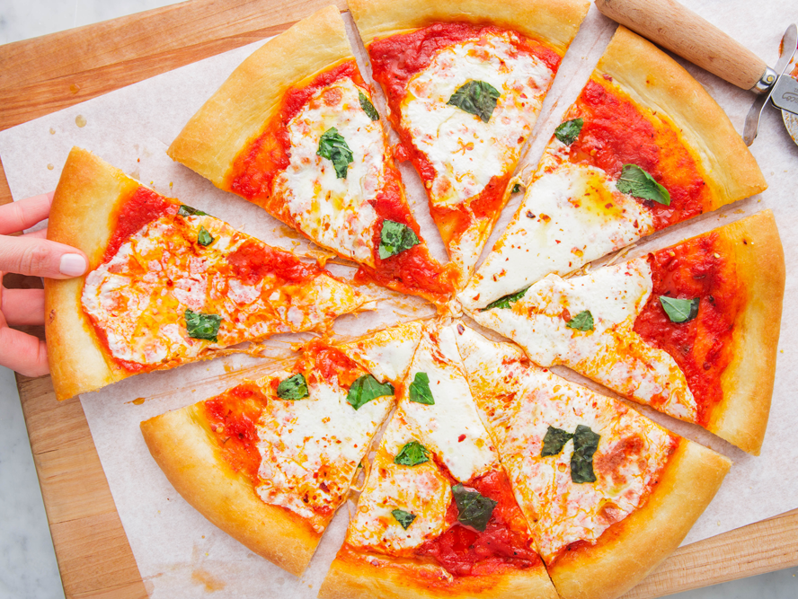

Slice of Happiness
Nothing beats a fresh-out-of-the-oven pizza, and once you see how easy it is to make for yourself, you'll never order delivery again.
First things first, make your dough.Then, get topping.
Thats the key!
Ingredients
For The Dough
- Cooking spray
- 1 1/4 cup lukewarm water
- 1 tbsp granulated sugar
- active dry yeast (2 1/4 tsp.)
- 3 cup all-purpose flour
- salt
- olive oil
For The Pizza
- 1/4 cup cornmeal, divided
- 1 c. marinara, divided
- fresh mozzarella, thinly sliced, divided
- fresh basil leaves
- pinch red pepper flakes
Steps
- Grease a large bowl with cooking spray.
In a small bowl add water and sugar and stir to dissolve, then sprinkle over yeast and let sit until frothy, about 8 minutes.
- In another large bowl, add flour, salt, and oil. Pour in yeast mixture, then mix with a wooden spoon until everything is combined and a shaggy dough begins to form.
Knead against sides of bowl until dough starts to come together, then turn onto your work surface and knead, adding a pinch of flour if needed, until it feels elastic and only slightly tacky, 5 minutes.
Form into a tight ball, place into prepared bowl, and cover with a clean dish towel. Let rise in a warm spot in your kitchen until doubled in size, about 1 hour and 30 minutes.
-
Gently punch down dough, then divide in 2, and roll into balls.
At this point, you can freeze one, or make two pizzas. Let dough balls rest as you preheat oven to 500° and grease a large baking sheet with olive oil.
Sprinkle all over with 2 tablespoons cornmeal.
- On your work surface, gently flatten one ball of dough and roll with a rolling pin (or stretch with your hands) until about 12” in diameter (as thin as you can).
Carefully transfer to prepared baking sheet and brush dough all over with oil.
Then, add your 1/2 cup sauce to middle of dough and spread outwards with a spoon or ladle, leaving about 1” for the crust.
Top with half the slices of mozzarella. Bake until crust is golden and cheese is melty, about 15 minutes.
-
Top with fresh basil leaves, a drizzle of olive oil, and red pepper flakes.
- Repeat with remaining dough and toppings for second pizza.
Return to top
Return to main page